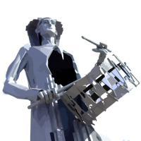

Historia
BIENVENIDO@S A LA RUTA DEL TAMBOR Y BOMBO
Gracias por visitar nuestra página web, espacio virtual desde el que queremos potenciar nuestra apuesta por una adaptación a los tiempos y avances que nos facilitan las nuevas tecnologías de la información y la comunicación, apostando por la modernidad y el desarrollo.
Este elemento renovador, seguirá manteniendo los valores esenciales en los que se basó el Acta Constitucional de nuestra Asociación, conservando, transmitiendo y mejorando una de las tradiciones, sin duda, más importantes del país, pero a la vez, queremos vincularla con la innovación, ser elemento vinculante, canal de comunicación entre todos los componentes de esa gran familia que somos los tambores y bombos y a la vez ser un canal de comunicación abierto al mundo.
En este nuevo portal, estamos revisando y actualizando nuestros datos y nuestra información, a través de una presentación más homogénea y útil. Potenciaremos mejorarla día a día, facilitando el acceso a nuestra historia, a nuestra organización y gestión, a nuestras actividades y proyectos y aceptaremos a través de los correos, tanto de la asociación,
[email protected] como de la presidencia,
[email protected] cualquier inquietud, duda o sugerencia planteada de forma cordial y constructiva.
Somos una asociación activa, dinámica, cargada de historia, de acontecimientos, punto de encuentro que da carácter a lo colectivo de nuestra tradición, tocar el tambor y el bombo en Semana Santa y desde nuestros pueblos,
ALBALATE DEL ARZOBISPO, ALCAÑIZ, ALCORISA, ANDORRA, CALANDA, HÍJAR, LA PUEBLA DE HÍJAR, SAMPER DE CALANDA y URREA DE GAÉN, seguiremos potenciando esa tradición desde nuestro propio lenguaje, a veces la palabra y siempre el sonido de nuestros tambores y bombos.
Segundo BORDONABA MESEGUER
Presidente de la Ruta del Tambor y Bombo
HISTORIA DE LA TRADICIÓN RUTA DEL TAMBOR Y BOMBO
Los sonidos de los pueblos que integran la Ruta del Tambor y el Bombo son la voz de una comarca llena de valores y riquezas que unidas y coordinadas pueden alcanzar resonancias insospechadas lejos de nuestras tierras. Esta es la idea original que dio pie a la fundación de esta asociación, y Mariano Laborda su precursor.
Los tambores de Calanda comenzaron a conocerse gracias a la labor de su gran cineasta y escritor Luis Buñuel, y la Semana Santa de Híjar había sido nombrada de Interés turístico. Sin embargo, los tambores y bombos era un fenómeno sociocultural de carácter simbólico en varios municipios de este territorio.
El 5 de Septiembre de 1.970 se reúne en Alcañiz la primera junta coordinadora con la participación de Andorra, Híjar, Calanda y la ciudad anfitriona, bajo la presencia del Delegado Provincial de Información y Turismo. En esa reunión se establecería el deseo común de “aunar cuantos esfuerzos vienen realizando las cuatro localidades mencionadas para divulgar y dar realce a sus tradicionales manifestaciones religiosas de la Pasión y organizar la ruta de los tambores, confeccionando un horario que permita a los visitantes compatibilizar los actos de mayor solemnidad de estas poblaciones, acordándose hacer extensivos estos proyectos a las localidades vecinas que también cuentan con destacadas manifestaciones de esta clase “. El 14 de Septiembre de 1970 la autoridad competente de Teruel aprobaba los estatutos de la entonces denominada “SEMANA SANTA EN EL BAJO ARAGON, RUTA DE TAMBOR Y BOMBO“.
La primera tarea consistió en la edición de un tríptico divulgativo y de un cartel que se distribuyeron en la cuaresma de 1971. En 1973 se confeccionan los grandes murales de cerámica artística con una estampa representativa de cada pueblo que todavía pueden verse en algunos municipios.
Desde su constitución se admitía la posibilidad de que otras localidades de la zona se integrasen en la Ruta, y así se fueron integrando sucesivamente Samper de Calanda, La Puebla de Híjar, Urrea de Gaén, Alcorisa y Albalate del Arzobispo sumando nueve pueblos que componen la actual “RUTA DEL TAMBOR Y BOMBO DEL BAJO ARAGON“, denominación acordada según los nuevos estatutos aprobados en Urrea el día 4 de octubre de 1986. Además la Junta Directiva. compuesta por dos representantes ligados a la Semana Santa de cada localidad, se crea una Junta Económica de la que forman parte los alcaldes de los nueve ayuntamientos.
La Ruta ha desarrollado un buen número de acciones para la difusión de la singular tradición cultural de Semana Santa bajo-aragonesa en tomo al tambor y bombo. Ya en 1976 en la sala de exposiciones del Palacio Provincial de Zaragoza se presenta una primera “Muestra de Fotografía, Semana Santa del Bajo Aragón. Ruta Tambor y Bombo”, y se inician las Jornadas de Convivencia en las que anualmente, de forma rotativa en cada pueblo participan cuadrillas representativas de cada uno de ellos, dando comienzo cada Semana Santa con el Pregón de al una personalidad. Presentaciones en distintas ciudades España. Y como colofón, la invitación a los dos gran acontecimientos de 1992: Exposición Universal de Sevilla y Juegos Olímpicos de Barcelona, en indudable reconocimiento hacia esta manifestación cultural de nuestros pueblos y gentes. Manifestación que ha contado recientemente con el apoyo de S.A.R. El Príncipe de Asturias, en audiencia en el Palacio de la Zarzuela el 7 de Febrero 1997, al objeto de recibir el “Tambor Noble” que cada año otorga la Ruta.
Los sonidos de la Ruta del Tambor y Bombo son la voz de una comarca llena de valores y riquezas, las señas identidad de un territorio. Su Semana Santa estremece y cautiva a cuantos la sienten como algo propio y cuantos visitantes la contemplan. Sus gentes se afanan en la organización de los actos, dándoles una dimensión comunitaria de cooperación entre los pueblos, y en el desarrollo y promoción de esta multitudinaria celebración popular. Meterse dentro de esta celebración, coger un tambor sumarse a cualquier cuadrilla, es la mejor forma de entenderlo. También queda el placer de contemplar desde fuera un rito único y unos sonidos tan penetrantes como inolvidables.
Los tambores y bombos de la Tierra Baja turolense imprimen un acervo cultural no sólo a la comarca, sino al resto de la región, pues la Comunidad Autónoma de Aragón tiene en la Semana Santa bajo-aragonesa un referente de su mejor oferta cultural y turística, por el que esta zona es conocida y del que todos los aragoneses deben estar orgullosos.